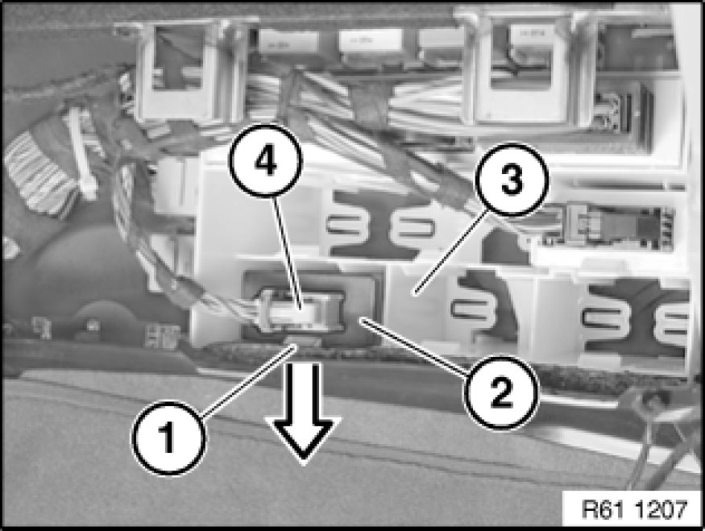

Removing and Installing/Replacing Control Unit for Adaptive Headlight
61 35 795 - Removing and installing (replacing) control unit for adaptive headlight

Important!
Read and comply with notes on protection against electrostatic discharge (ESD protection) 61 35 ... Notes on ESD Protection (Electro Static Discharge).

Necessary preliminary tasks:
- Remove right glovebox with housing 51 16 366 Removing and Installing Right Glovebox With Housing

Unlock catch (1) in direction of arrow.
Pull control unit for adaptive headlight (2) out of equipment carrier (3) slightly.
Unlock plug connection (4) and disconnect.
Remove control unit for adaptive headlight (2).

Replacement:
Carry out programming/coding Programming and Relearning.